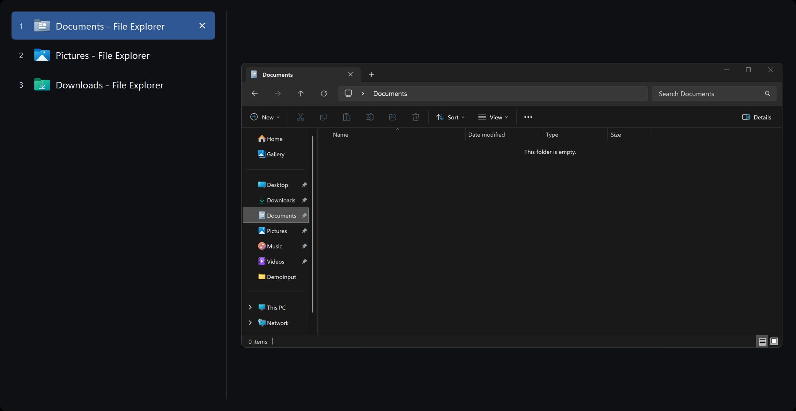

Stop tabbing past
the window you want.
AltTabio keeps Alt+Tab on Windows and Cmd+Tab on the Mac, and gives every open window a number. Press it and you're there.
Free and open source. No account, no ads, and it never goes online.

What changes when you press the shortcut.
-
Numbered windows
Press 1 to 9 and you're on that window. No stepping through thumbnails that all look alike.
-
Live preview
See the selected window before you let go, large enough to tell two drafts apart.
-
The shortcut you know
Hold Alt or Cmd and tap Tab, as you always have. There's nothing new to learn.
-
Every window on a Mac
Minimized windows and windows on other desktops are in the list too, not only apps.
-
Type to filter on Windows
Start typing while you hold Alt, and the list narrows by title, app, or number.
-
Act from the list
Close, minimize, hide, or quit without switching first. End a frozen program there too.
What's the catch? There isn't one.
-
No network access
It never connects to the internet, so it can't send anything anywhere.
-
Under 1 MB
A native app that waits for the shortcut and does nothing else.
-
Easy to remove
Quit it and the system switcher is back.
-
Open source
MIT license. Every line of the code is on GitHub.
Made for both systems.
Each version follows the habits of its own system.
AltTabio for Windows
Replaces Alt+Tab and, if you like, Win+Tab. A numbered list, a large live preview, and type to filter.
See the Windows version macOS 26 or laterAltTabio for Mac
Replaces Cmd+Tab and keeps its habits. Every window of the selected app is one keypress away.
See the Mac versionUp and running in a minute.
No installer wizard, no store account, no runtime.
Download, unzip, run
- Get the Windows zip from GitHub Releases.
- Unzip it into a folder you'll keep. If you turn on start with Windows, pick one only administrators can change, such as Program Files.
- Open
AltTabio.exe, click Yes on the Windows prompt, and press Alt+Tab.
Paste one line into Terminal
curl -fsSL https://vibeslop.github.io/AltTabio/install.sh | sh
- The script checks the download's signature, puts
AltTabio.appin Applications, and opens it. - Allow Accessibility when AltTabio asks. Screen Recording is only for previews.
- Press Cmd+Tab. To update later, run the same line again.
Questions
Price, privacy, permissions, and how to leave.
Is AltTabio really free?
Yes. AltTabio is open-source software under the MIT license. There is no trial, no ads, no account, and no paid version.
Does it collect any data?
No. The app has no analytics and never connects to the internet. The source code is public, so anyone can check.
Will it slow my computer down?
No. It is a small native program written in Rust. It waits for the shortcut and does nothing else in the background.
Why does Windows ask for administrator permission?
AltTabio needs it to see Alt+Tab before Windows does and to close a frozen program when you ask. Those are the only reasons.
Why does the Mac version ask for Accessibility and Screen Recording?
Accessibility lets AltTabio see Cmd+Tab before macOS does and raise, minimize, or close windows. Screen Recording is only for window previews, and only once you turn previews on. Without it the list still works.
Why install on a Mac with a Terminal command?
AltTabio is not notarized by Apple, which takes a paid developer account, so macOS blocks a copy downloaded in a browser. The install script downloads with curl, checks the signature, and puts the app in Applications. Every release is signed with the same certificate, so your permissions carry over to updates.
You can also download the zip and allow it by hand.
How do I get the built-in switcher back?
On Windows, right-click the AltTabio tray icon and choose Exit. On a Mac, quit AltTabio from its menu bar icon, or turn off Replace ⌘ Tab in its settings.
On Windows you can also replace only Alt+Tab or only Win+Tab.
How do I uninstall it?
On Windows, turn off start with Windows if you enabled it, exit from the tray icon, and delete the folder.
On a Mac, turn off Launch at login, quit AltTabio, delete AltTabio.app, and remove its settings and permissions. The Mac page has the commands.
Is this an Alt+Tab Terminator alternative?
Yes. AltTabio is an independent, open-source window switcher for people who want a list and a live preview on Alt+Tab. It is not affiliated with Alt+Tab Terminator.
Try it on your next Alt+Tab.
Press the shortcut you already know. If AltTabio isn't for you, removing it takes a minute too.
Free and open source. No account, no ads, and it never goes online.